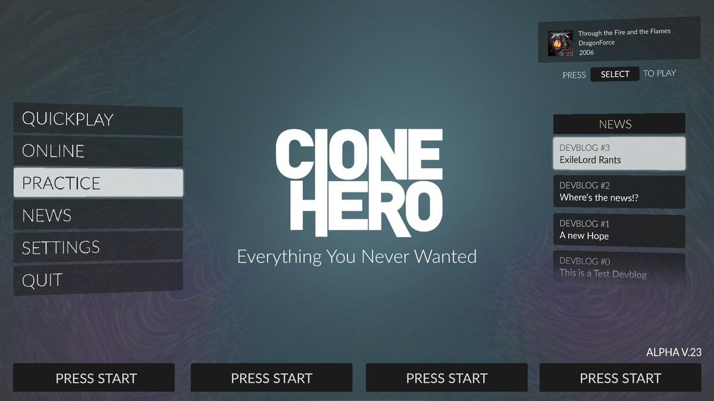

Jen Bulat
production director
Go to Jen’s pick


My fiancé and I are currently researching epic ideas for a honeymoon. This travel documentary about motorbiking in Vietnam from Tim and Fin has our wheels turning! Life on wheels is the life for us.
Clair Myatt
project manager
Go to Clair’s pick
Erik Delfin
design associate
Go to Erik’s pick

It’s wrong to like someone who has killed three people, right? But I couldn’t help myself while reading Blood Sugar, Sascha Rothchild’s debut novel, about a woman named Ruby who finds herself on the wrong side of the law—for one murder she didn’t commit. Rothchild knows how to move the reader through a story, so much that I found myself saying “Just one more chapter!” late into the night. It’s a read that’s worth the lost sleep.

Every weekend, my 16-year-old stepdaughter asks me what I’ve been listening to lately. Most weeks, I disappoint her by admitting I mostly just listened to The Daily and We Can Do Hard Things, my favorite podcasts. Thanks to my colleague KC, who recommends a soul radio show below, I might go up in her esteem ever so slightly next weekend.
And July is international Blondie and Debbie Harry month, so expect me to be playing Parallel Lines on repeat. It’s a perfect album for summer, in my opinion. We share our favorite Blondie tracks below, as well as picks for those of you planning your next vacation, reaching for a beach read, or looking for a gaming avenue into music.
Clone Hero is a free rhythm game based on the game Guitar Hero. Guitar Hero was a franchise of games released between 2005 and 2015 in which players played along to rock songs on a five-fretted plastic guitar. It was loved for its superb soundtracks including the likes of Eric Clapton, Guns N’ Roses, Jimi Hendrix, Nirvana, and the Red Hot Chili Peppers. The third installment in the series was most notorious for having players around the world attempt to beat each other’s scores on DragonForce’s “Through the Fire and Flames.”
The game proved timeless to fans. With the absence of a new version in many years, dedicated fans developed Clone Hero—a freeware title that allows players to hook up their old guitar controllers to their computer and play along to user-uploaded, custom songs. I was fortunate enough to run across an old Guitar Hero controller at my local Disc Replay. I can confidently say I haven’t had this much fun playing a video game since I was a kid.



Our favorite Blondie songs:

Ross:
“Dreaming”
Jake:
“Hanging on
Clair:
“Heart of Glass”
Scott:
“Sunday Girl”
Soulection Radio transforms my dining room (aka my home office) into a swanky coffee shop instantly. Updated weekly, it’s a two-hour-long, LA-based radio show hosted by Joe Kay that satisfies all of my R&B, baile-pop, afro-beat cravings. The tempo is enough to keep you locked into whatever you’re working on without being too distracting. It’s also an ideal station for cleaning, cooking, hanging with friends . . . literally anything. I listen on SoundCloud, but it also streams on Apple Music if that’s more your vibe. Whenever I’m listening, it instantly puts me in a good mood.
Go to KC’s pick
KC Esper
editor
the Telephone”